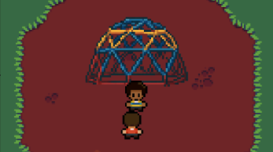
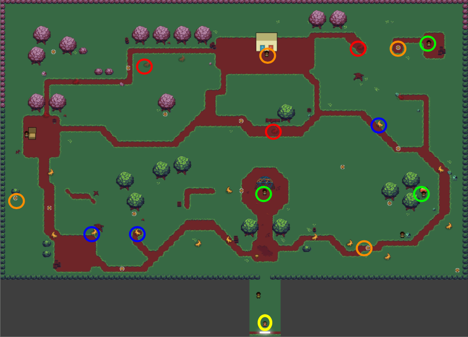
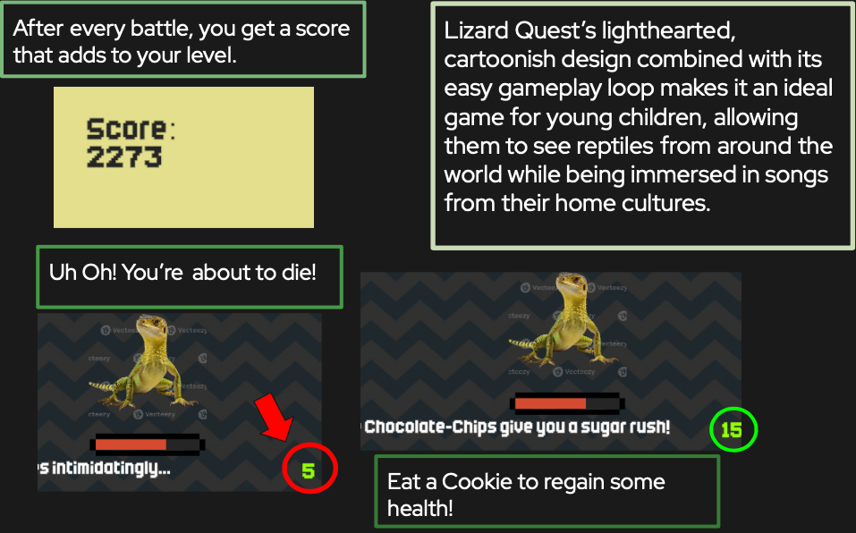
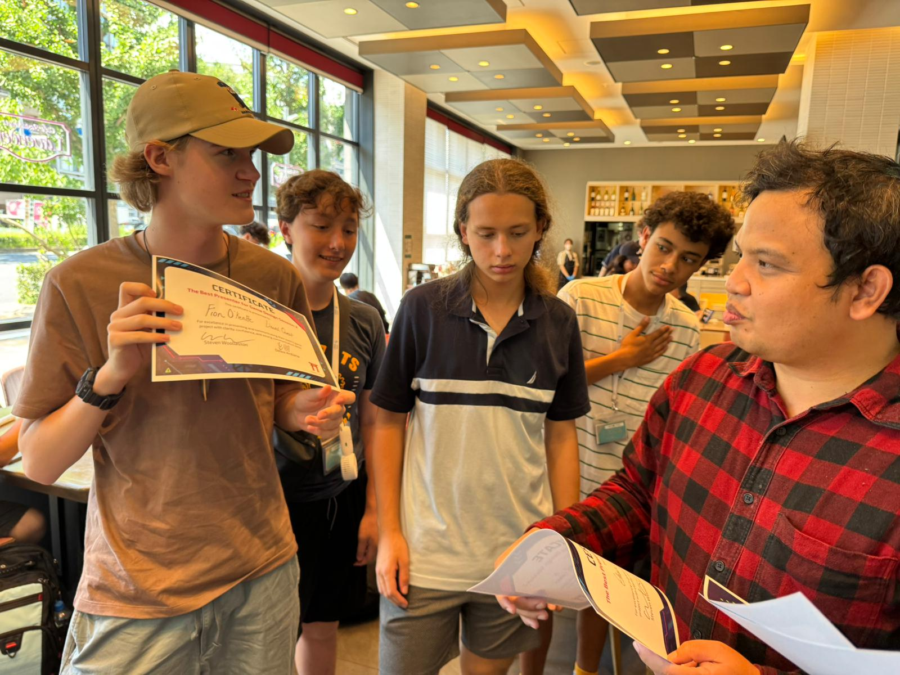

Welcome to the world of
Lizard Quest is an old-school RPG styled after games like pokemon and earthbound. Meet wacky characters with a lot to say, engage in difficult battles, and compete for the strongest lizard!
In Lizard Quest, you play as a lizard-owning kindergardener, who has to defend his lizard's honor. Send your lizard into battles against the other lizards of the playground - including those of both the domestic and the wild variety - and defeat the toughest lizard on the playground to be the best lizard trainer there is!
You'll also find that the playground has a lot to offer. Visit many of the unique locals, like the jungle-gym, the sand box, or Liz's Lemonade Stand! These spots - placed along the perimeter of the map - are where you'll find the five boss battles of the game. These battles won't be easy, so be sure to stock up on cookies.
Explore the expansive overworld that is the playground! You can talk to NPCs - which will que diologue and sometimes lead to a battle - or fight lizards to level up. When entering a battle, you'll find you have a few options. Battling will deduct health from the opponent, and will then proceed to their turn. You can also heal during your turn, using cookies collected in the overworld. But don't indulge too often, or you'll have no way to heal.
Lizard quest was designed by a team of four on a study-abroad program. Over a ten day development period, the game found it's identity through inspirations like Undertale, Pokemon Emerald and Ruby, Earthbound, and Final Fantasy. The game won best presentation.
